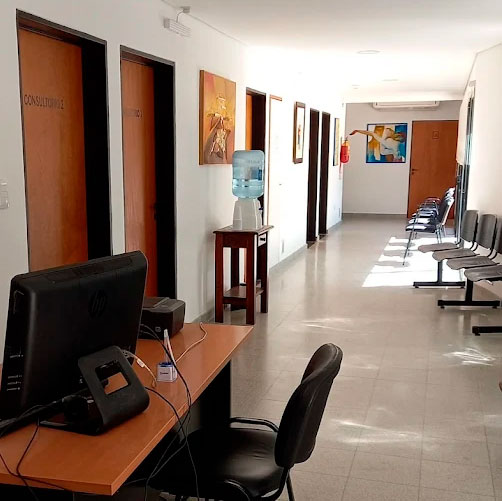

Traumatología · Educación en dolor · Prevención
Traumatología con mirada integrativa
Médica egresada de la UBA, especialización en Traumatología (Hospital Interzonal Güemes, Haedo). Médica de planta en el Hospital Posadas (Saladillo).
Abordaje integral
Evaluación + plan personalizado
Movimiento y fuerza
Recuperación progresiva y segura
Educación en dolor
Entender para decidir mejor
Hábitos saludables
Prevención de recaídas
Atención con evaluación clínica y orientación clara para el tratamiento.
Patologías frecuentes
Seleccioná una para ver: qué es · síntomas · cuándo consultar · qué podés hacer.
¿Querés más patologías y contenido semanal?
Ir a InstagramTerapias asociadas
Complementos frecuentes en recuperación y prevención de recaídas.
Kinesiología
Movilidad, fuerza y reeducación del movimiento con progresión segura.
Terapia ocupacional
Función en mano/miembro superior, férulas y adaptación de actividades.
Pilates / Yoga adaptado
Core, respiración y movilidad para columna y control del estrés.
Consultorio CeDiS
Atención y turnos
Reservá por WhatsApp. Te respondemos con la próxima disponibilidad.
Horarios
Miércoles 09:00 hs · Viernes 15:00 hs
Dirección
CEDIS, Estrada 2077, Saladillo
Contacto
Tel: (2344) 431585 · WhatsApp: +54 9 2344 404004
Si tenés dolor intenso, fiebre, pérdida de fuerza o adormecimiento progresivo, consultá con urgencia.
BIOME · Contenidos semanales
Novedades en Instagram
Publico información clara y práctica sobre dolor musculoesquelético, prevención, ejercicios guiados y señales de alarma.
¿Querés recibir tips semanales y novedades?
Seguime y guardá los posteos para consultarlos cuando los necesites.
Turnos por WhatsApp. Próximamente: turnera online desde la web.